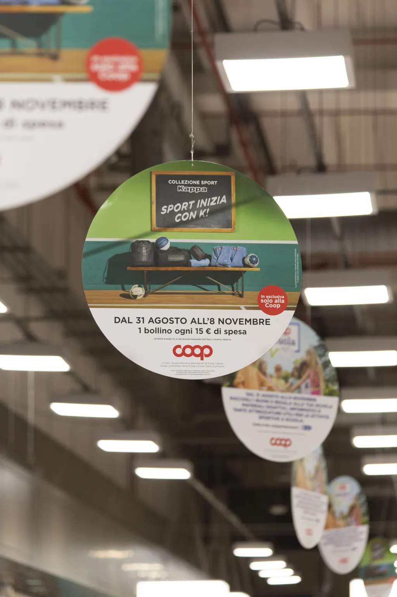

For retailers
Turn footfall into loyalty.
Your shoppers have more choice than ever, and a competitor's promotion is only ever a car park away. We design continuity campaigns, gamified rewards and digital loyalty programmes that give people a real reason to keep choosing you — lifting basket size, visit frequency and margin while deepening the relationship you already own.
- Measurable sales uplift during every activation
- Higher visit frequency and bigger baskets
- Emotional loyalty that outlasts the campaign